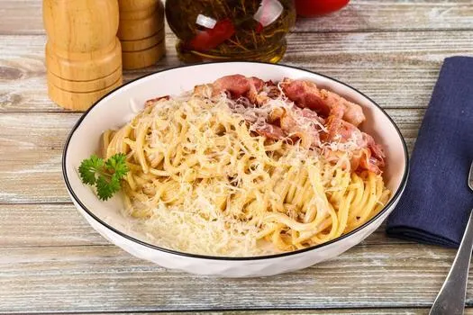

Pasta Carbonara

Pasta Carbonara is a classic Italian dish made with eggs, hard cheese (typically Pecorino Romano or Parmigiano Reggiano), cured pork (traditionally guanciale, but pancetta or bacon are common substitutes), and black pepper.
Ingredients:
Steps:
- Cook the pasta – Boil spaghetti or bucatini in salted water until al dente. Reserve ½ cup of starchy pasta water before draining.
- Render the meat – Meanwhile, cook guanciale (or pancetta/bacon) in a cold pan over medium heat until the fat renders and the pieces are crispy. Remove from heat.
- Render the meat – Meanwhile, cook guanciale (or pancetta/bacon) in a cold pan over medium heat until the fat renders and the pieces are crispy. Remove from heat.
- Serve immediately – Plate, top with extra cheese and pepper, and eat right away before the sauce tightens.
Home